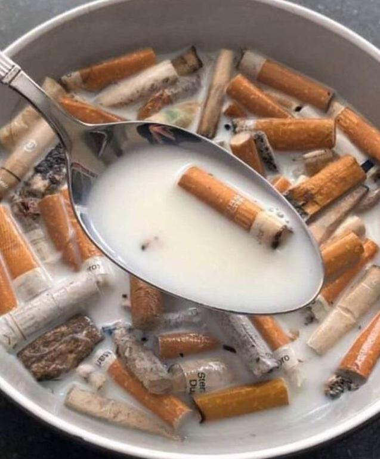

Cigreals

Ingredients
- 1 bowl of milk
- 4 to 6 cigarettes (select your metaphorical companions wisely)
Prep time
5 minutes or however long it takes to question you life choices
Price
The cost of introspection
How to make Cigreals:
-
Choose your vessel
-
Select a bowl that reflects the emptiness of your existence. This vessel will carry the weight of your breakfast epiphany.
-
Pour the milk
-
Gently pour the milk into the bowl. It is recommended to use milk sourced from cows who have contemplated the futility of their pasture existence.
-
Arrange the Cigarettes
-
Strategically place the cigarettes around the bowl, forming a circle of existential angst.
Nutrition Facts
- Calories: As meaningless as the concept of time.
- Protein: Existentially sourced.
Chef's Note
Take a moment to marvel at the absurdity of your creation.
As you gaze into the bowl, contemplate the choices that led you to this point – a breakfast that's essentially a silent scream into the nothing.
Bon appétit, seeker of the culinary void.